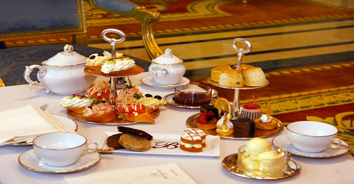

История
Первоначально чай использовался в качестве лекарственного средства. Его употребление в качестве напитка широко распространилось во время китайской династии Тан.
Самым старым из когда-либо обнаруженных чайных листьев около 2100 лет, они были обнаружены Институтом археологии провинции Шэньси (Китай) во время раскопок мавзолея Хан Ян Лин в период с 1998 по 2005 год.
Открытие чая показывает, что чай был выращен 2100 лет назад во времена династии Западная Хань (207 г. до н. э. — 9 г. н. э.), что на несколько столетий старше, чем ранее обнаруженные находки.